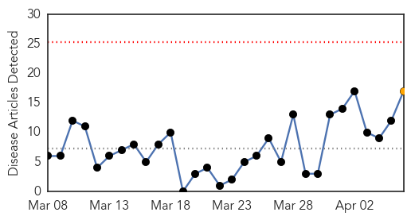
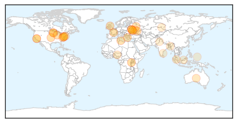

Measles
30-Day Web Trend
0 alerts, 1 warnings

30-Day Twitter Trend
0 alerts, 0 warnings

Article Locations

Article Confidences

Top Articles:
- 0.967
- Brampton infant tests positive for measles - Toronto
- 0.945
- UC Berkeley student in isolation with measles, second reported case of measles at the university
- 0.936
- A case of measles is confirmed in Springfield
- 0.896
- Experts decode germs’ DNA to fight food poisoning - National
- 0.890
- Health ministry urges measles vaccinations for children
- 0.882
- Washington Woman Exposes Thousands of Fans of Kings of Leon to Measles
- 0.873
- In America, vaccine denial goes mainstream
- 0.859
- UC Berkeley providing vaccinations after second student diagnosed with measles
- 0.820
- 2nd UC Berkeley student infected with measles 'could have exposed thousands'
- 0.820
- Second measles case confirmed at UC Berkeley
- 0.816
- Another U.C. Berkeley Student Diagnosed with Measles. Category
- 0.805
- Anti-vaccine movement is giving diseases a 2nd life
- 0.640
- Among US upper middle class, vaccine denial goes mainstream
- 0.633
- Measles On Canadian Flight Prompts Health Warning
- 0.623
- More talk needed: Call for comprehensive discussion on vaccines
- 0.558
- Infant from Abu Dhabi brings measles threat to Brampton
- 0.516
- Student Infected With Measles Kept In Isolation At UC Berkeley University
Top Tweets:
-
No tweets found for Apr 06, 2014
Unknown
30-Day Web Trend
0 alerts, 0 warnings

30-Day Twitter Trend
1 alerts, 0 warnings

Article Locations
Article Confidences

Top Articles:
- 0.997
- Lassa Fever Virus in Minnesota Traveler Coming from West Africa Confirmed
- 0.987
- Minnesota Traveler Returns to U.S with Lassa Fever
- 0.917
- Chicago Tribune
- 0.917
- Chicago Tribune
- 0.917
- Chicago Tribune
- 0.917
- Chicago Tribune
- 0.917
- Chicago Tribune
- 0.917
- Chicago Tribune
- 0.917
- Chicago Tribune
- 0.900
- My cat gave me TB - Health
- 0.883
- Health officials roll up sleeves for flu jab
- 0.871
- Experts decode germs' DNA to fight food poisoning
- 0.866
- Pro-Russian protesters storm the regional administrative building in Kharkiv
- 0.866
- Pro-Russia protesters seize third state building in eastern Ukraine -Ifax
- 0.866
- Pro-Russian protesters hang a banner and wave flags as they storm the regional government building in Donetsk
- 0.866
- A police office shouts as pro-Russia protesters storm the regional government building in Donetsk
- 0.866
- Pro-Russia protesters storm the regional government building in Donetsk
- 0.862
- Experts decode germs' DNA to fight food poisoning
- 0.827
- Experts decode germs’ DNA to fight food poisoning
- 0.824
- Scientists discover unnamed disease carried by deer ticks
- 0.819
- Experts decode germs' DNA to fight food poisoning
- 0.727
- New position statement on Lyme disease
- 0.637
- Malaria cases up 9 per cent in Ireland
- 0.630
- The fifth parasite: Malaysia studies new malarial strain - Health
- 0.571
- India’s election sparks claim of ‘politics of hatred’
- 0.563
- Video: Rwanda genocide chronology, 1994 to present day
- 0.563
- Can France and Rwanda ever reconcile over role in genocide?
- 0.542
- Mali appoints new PM after government resigns
- 0.534
- Health checks draw the young
- 0.530
- Pro-Russia protesters seize eastern Ukraine state buildings
- 0.530
- Possible signals from missing plane redirect search
- 0.523
- Punjab hospitals’ ICUs in bad shape
- 0.521
- Nigeria surpasses South Africa as continent's biggest economy
- 0.516
- Tonsillectomy Might Be Worth It for Some Adults
- 0.506
- Chicken farm incident in Palau under observation
Top Tweets:
- 0.725
- With today’s new cases, the total confirmed cases of MERS in S. Arabia reaches 167 including 66 deaths (~40 fatality rate) since Sep. 2012.